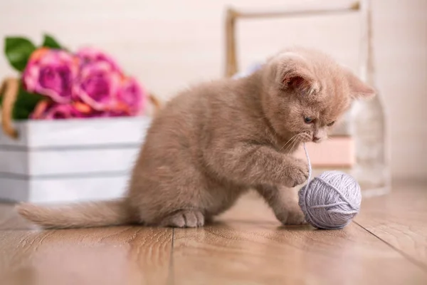
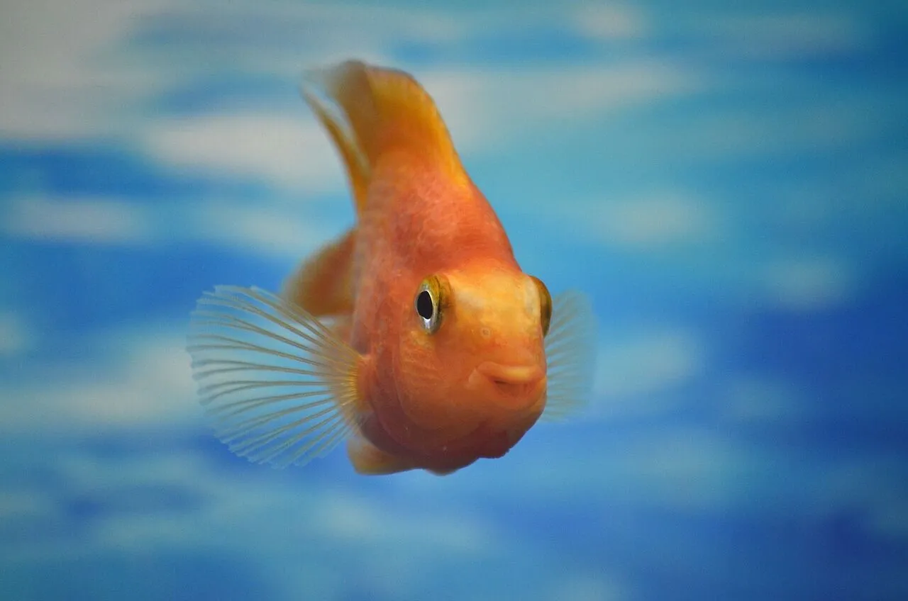
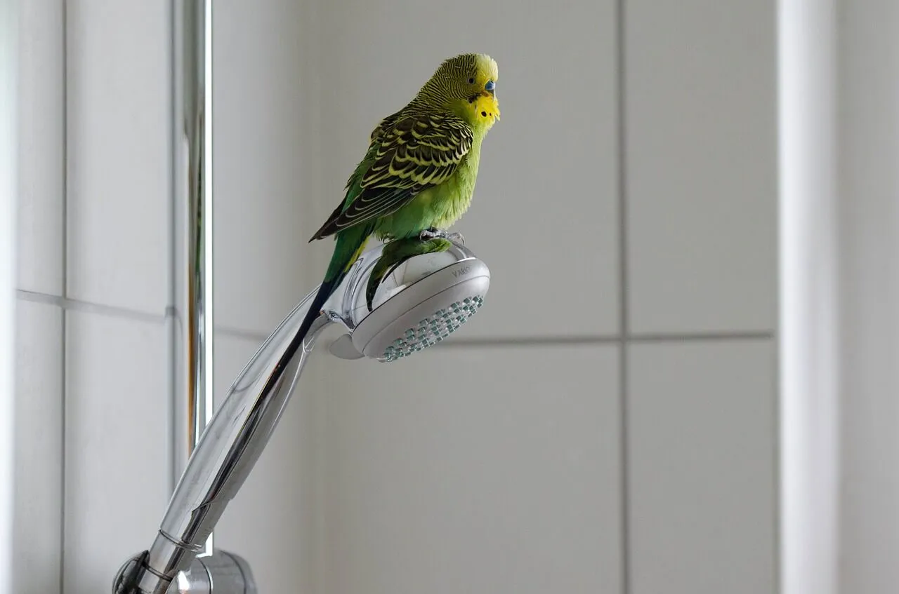
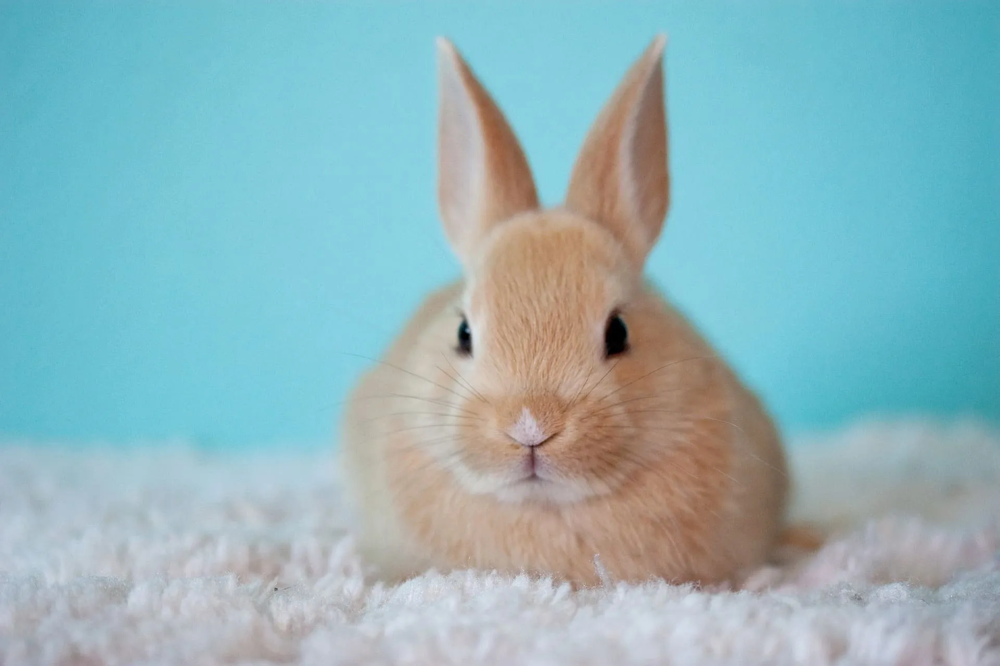
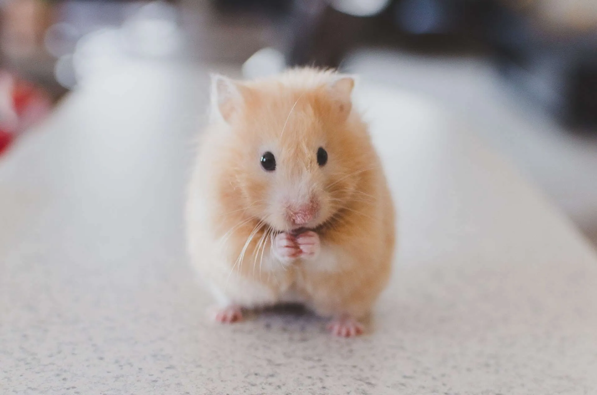
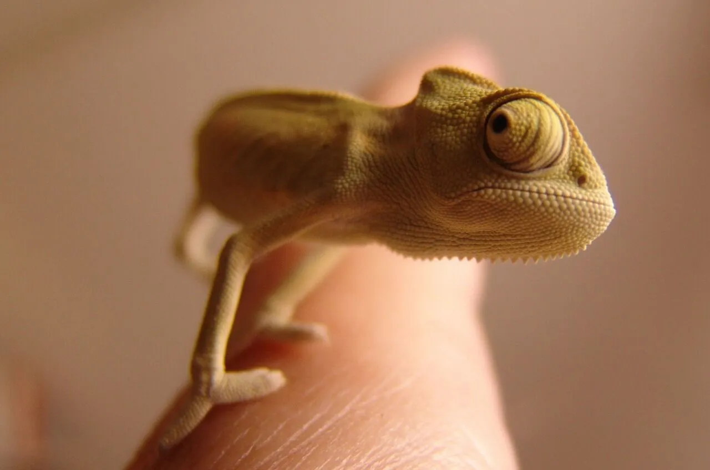

Не всі домашні тварини підходять для життя в міській квартирі. Та й з відповідними видами і породами може виникнути низка труднощів. Але якщо ви готові до цього і
усвідомлюєте всі ризики, вихованець стане вам найкращим другом на все життя, подарує свою любов і безліч позитивних емоцій.
Домашні тварини яких ми хочемо вам запропонувати:
• Собаки
🐕У наш час собаки все ще залишаються одним з найпопулярніших видів домашніх тварин для утримання в місті. Це вірний і відданий друг, з яким ніколи не засумуєш. Однак собакам потрібен особливий догляд,
тому перед остаточним прийняттям рішення про "усиновлення" цуценя потрібно тверезо зважити всі за і проти.
Необхідно розуміти, що собаки – це дуже соціальні істоти. З ними потрібно гуляти, грати, давати їм головоломки, дресирувати і
надавати спілкування з іншими собаками. Багато які породи погано переносять довгу розлуку з господарями, так що їх не можна заводити,
якщо вас майже ніколи не буває вдома. Необхідно також пам'ятати про линьки і можливе псування меблів, поки щеня не вивчить правила поведінки в квартирі.
Собаки часто лякаються грози, різких звуків, можуть гавкати на людей в коридорі, через що нерідко трапляються конфлікти з сусідами.
Забезпечувати повноцінне і щасливе існування собаки – це ще й досить дороге задоволення: корм, ласощі, нашийник, повідець, намордник, послуги кінолога.
Потрібно відповідально дресирувати свого вихованця, щоб той нічого не їв на вулиці, не кидався на перехожих та інших тварин.
Важливим етапом при виборі собаки в якості домашньої тварини стане вибір породи. Безумовно,
найбільш прийнятним варіантом буде віддати перевагу собакам невеликого або середнього розміру.
Але при цьому, всупереч поширеній думці, деякі великі породи також підійдуть для життя в квартирі.
Мопси, коргі, такси, мастіфи, кане-корсо, пуделі і чихуахуа – у кожної породи свої особливості та норми прогулянок.
Кожну породу слід вивчити окремо і
тоді вже вибрати відповідну для вас і вашого способу життя.🐕
ППО-сукупність організаційних заходів та бойових дій,
які спрямовані на відбиття ворожого удару з повітря, прикриття угрупувань власних наземних військ або важливих об'єктів у тилу.
• Коти і кішки

🐱Один з найбільш самостійних і незалежних видів домашніх тварин. Майже все, що потрібно більшості домашніх котів – це їжа, вода і чистий лоток. Тим не менш, багато хто з них не проти пограти з пухнастою іграшкою або поганяти по квартирі м'ячик.
Основне проблемне питання щодо кішок як домашніх вихованців – велика кількість шерсті та загроза м'яким меблям у вигляді гострих кігтиків. Але ці нюанси вирішуються в кілька етапів: регулярні вичісування, стрижка пазурів і купівля якісної когтеточки.
Незважаючи на усталений стереотип, більшість котів добре ставляться до спілкування з собі подібними. Також, хоч зазвичай вони гордо не подають виду, кішки будуть нудьгувати за своїєю людиною, якщо вона надовго піде.
В цілому коти і кішки найбільш оптимальні домашні вихованці для квартири. Вони не вимагають особливо високого рівня догляду, але при цьому можуть подарувати багато позитивних емоцій.🐱
• Рибки

Найпопулярніші породи рибок:Золоті рибки, барбуси,даніо,кардинали та лабео.
🐟Спогляданню за рибами приписується багато цілющих властивостей, але з упевненістю можна сказати тільки те, що це точно здорово заспокоює. Якщо вам не дуже хочеться проводити багато часу з домашнім улюбленцем, грати з ним і виховувати, то рибки підійдуть вам ідеально.
Але є один важливий момент. Незважаючи на своє абстрагування, риби потребують серйозного догляду, що складається в регулярному прибиранню акваріума, заміні води, підтримці необхідних різним видам світлових і водних умов і,
звичайно ж, годуванні. Істотний плюс у рибках – у вас ніколи не буде проблем з сусідами через шум або запах.🐠
• Птахи

Найпопулярніші породи папуг:Хвилястий папуга,Неразлучник Рожевощокий,Корелла біла,Амазон,Ара.
🦜Цей вид домашніх тварин для квартири теж користується неабиякою популярністю. Деякі види можна навчити повторювати якісь слова, в основному вони невибагливі і
займають мало місця.Але за птахами також потрібен відповідальний догляд і знання особливостей різних видів, як, наприклад,
любов хвилястих папужок вилітати у відкриті вікна. Більшості видів буде набагато комфортніше жити в парі. Ще вони можуть шуміти, в тому числі по ночах.🦜
Ми вчимося, починаючи з простого і поступово переходимо до складного.
• Кролики

🐇В основному кролики активні вранці і ввечері, що відмінно поєднується майже з будь-яким графіком роботи. Їм не потрібно багато догляду, тільки достатньо їжі,
води і чистота в вольєрі. Але варто пам'ятати, що зуби кроликів ростуть все життя, тому їм потрібні спеціальні предмети, щоб їх гризти.
Якщо ви випускаєте свого кролика з вольєра,уважно за ним стежите, інакше можете попрощатися з більшістю проводів, що лежать на підлозі.🐇
• Маленькі гризуни

Найпопулярніші види гризунів:Домашні декоративни щури,Хомяки,миші.
🐹До цієї категорії відносять хом'яків, щурів, морських свинок і шиншил. Якщо вас турбує питання, яку тварину завести в маленькій квартирі,
то можете сміливо зупиняти свій вибір на гризунах.
Головний мінус цих тварин в тому, що вони ведуть нічний спосіб життя, тому можуть досить голосно шуміти в своїй клітці, копаючись в сіні або граючись.
В іншому вони невибагливі, вимагають до себе набагато менше уваги ніж кролики.
Але є пара особливостей. Морські свинки краще живуть в парах, а щури люблять пограти зі своїм господарем і полазити по ньому.🐀
• Рептилії і повзучі

🦎Екзотичні домашні тварини для квартири – рептилії і повзучі. Найпопулярнішим видом тварин в цій категорії є черепахи, трохи далі за шкалою йдуть ящірки і змії. І якщо з черепахами все більш-менш просто, багато людей знають про необхідні умови утримання і правила, то з ящірками і зміями все складніше.
Найголовніше – це підійти до вибору екзотичного вихованця відповідально і усвідомлено. Необхідно розуміти, що багато видів непристосовані до нашого клімату, їм потрібен спеціальне світло і температура в акваріумі. Багатьох змій і ящірок потрібно буде годувати великими жуками, а деяких великих представників навіть дрібними гризунами.
Пам'ятайте! Не маючи повної інформації про тварину, ви можете її погубити. Ні в якому разі не заводьте отруйних рептилій, це очевидно небезпечно для життя. Не купуйте екзотичних тварин без документів, це найімовірніше результат незаконного ввезення, і це теж надзвичайно небезпечно.
Рішення завести домашнього вихованця – це величезна відповідальність, і до цього етапу життя потрібно підходити максимально усвідомлено. Хтось вимагає більше догляду,
хтось більш невибагливий, але абсолютно всім потрібна ваша любов і турбота. Варто також пам'ятати і про почуття міри, адже п'ять кішок і
чотири собаки в "однушці" точно не зможуть жити щасливо. Не всім тваринам буде добре в міській квартирі, але відповідних видів багато, тому вибирайте і вперед!🦎